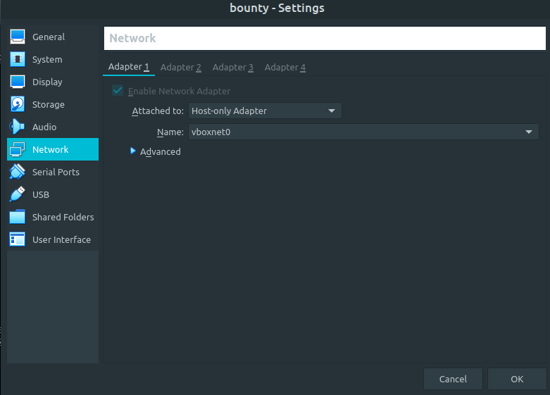
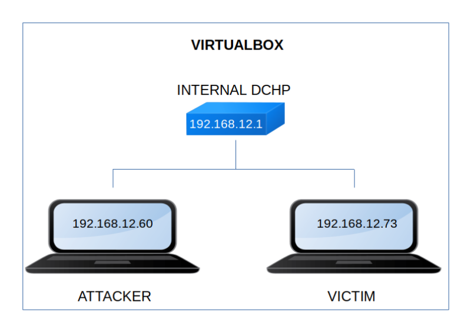

Bounty
▸ Bounty
▸ 2. Finding Services and Ports
▸ 4.1 Upload a "PHP reverse shell"
▸ 5.4 Connect via SSH (Second flag)
Difficulty: Intermediate.
Flag: 2 flags.
Learning:
• Reconnaissance
Scan Network
Find services
• Enumerate
Nikto
• Exploitation
Cute Editor
PHP Reverse Shell
Sudoers
• Privilege Escalation
Gitea
Metasploit
Connect via SSH with “id_rsa” file
• Download (Mirror): https://10rdp4.github.io/2023/01/01/hmv-bounty.html
Install the machine on VirtualBox:
1. Download the file and extract it.
2. On Virtualbox choose File->Import Appliance.
3. Select the file “ova”.
4. Accept to import.

Watch your Machine IP.
$ ifconfigOutput:

Diagram

